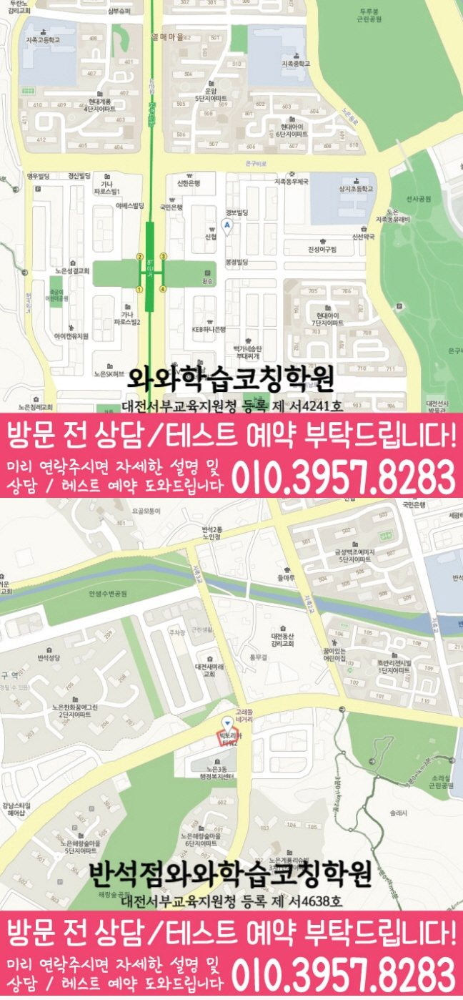

내신 지문 분석
학교별 시험 범위, 교과서·부교재 지문, 선생님 강조 포인트를 기준으로 복습 순서를 정리합니다.
HIGH SCHOOL ENGLISH COACHING
대전 유성구 지족동에서 고등학생 영어학원을 찾는 학생을 위해 영어 진단, 어휘·독해 관리, 시험 대비, 플래너 기준을 한 흐름으로 정리했습니다.
ENGLISH GUIDE
고등학생 영어는 학교 내신과 모의고사를 따로 보지 않고, 지문 분석·어휘·구문·문법·서술형 답안 흐름을 함께 관리해야 안정됩니다. 지족동에서 고등학생 영어학원을 알아볼 때는 진도보다 현재 막히는 지점과 반복 가능한 영어 학습 습관을 먼저 확인하는 편이 좋습니다.

학교별 시험 범위, 교과서·부교재 지문, 선생님 강조 포인트를 기준으로 복습 순서를 정리합니다.
단어 암기량만 보지 않고 문장 구조, 문법 적용, 해석이 막히는 지점을 따로 확인합니다.
독해 시간 배분, 빈칸·순서·삽입 등 점수 변동이 큰 유형을 오답과 함께 관리합니다.

LOCAL ENGLISH STRATEGY
대전 유성구 지족동 주변에서 지족동 고등학생 영어학원을 찾는다면, 단어를 얼마나 외웠는지만 보기보다 읽기·문법·독해·서술형 중 어디서 흔들리는지 확인해야 합니다.
LOCAL ENGLISH GUIDE
고등학생 영어는 내신 지문 암기와 모의고사 독해를 따로 떼어 볼 수 없습니다. 지족동 고등학생 영어학원 페이지는 지족동 학생이 영어학원을 선택하기 전, 어휘·구문·문법·독해·서술형을 어떤 기준으로 점검하면 좋은지 정리한 안내입니다.
학교 시험 범위와 선생님 강조 포인트를 기준으로 지문 분석, 핵심 표현, 서술형 답안 조건을 확인합니다.
시간이 부족한 유형, 해석이 막히는 구문, 반복적으로 틀리는 어휘·문법 약점을 따로 봅니다.
최근 시험지와 모의고사 오답을 기준으로 어휘, 구문, 문법, 독해 약점을 확인합니다.
시험기간에는 학교 범위를 우선으로, 평소에는 모의고사 유형과 독해 시간을 함께 관리합니다.
조건 영작, 핵심 표현, 문장 구조 오류를 정리해 다음 학습 계획에 반영합니다.
지족동 고등학생 영어학원 상담에서는 학생의 현재 영어 수준, 단어 습관, 문법 이해도, 독해 오답, 시험 목표를 기준으로 학습 방향을 구체화합니다. 먼저 현재 위치를 확인하고 지킬 수 있는 계획부터 만드는 것이 중요합니다.
주소
대전 유성구 지족동 910-7번지 401
등록정보
와와학습코칭학원 · 대전서부교육지원청 등록 제 서4241호
초등
중등
고등
DIRECT STUDY ANSWER
와와학습코칭센터 지족점의 지족동 고등학생 영어학원 안내는 학생의 현재 상태를 단정하지 않습니다. 내신 범위와 모의고사 문항별 결과와 최근 영어 시험지, 어휘 테스트, 독해 지문 표시를 확인한 뒤 어휘 회상·문법 적용·구문 해석·독해 근거 가운데 우선 관리할 항목을 정하는 방식으로 설명합니다. 학년 운영형 안내이므로 주간 시간표, 과제 이행, 복습 지속성을 함께 살펴 실행 루틴과 다음 점검 시점을 제시합니다. 결과는 계획 대비 실행률과 과제 마감, 복습 간격 유지 여부로 확인합니다.
고등학생의 시간 배분·과제 수행·복습 습관이 중심입니다. 특정 문항 분석보다 영어 학습을 주간 일정 안에서 지속하는 방법을 먼저 확인합니다. 다른 관점의 안내가 필요하면 지족동 고등 영어학원도 함께 확인하세요.
VERIFIED CENTER CONTEXT
상담에서는 최근 영어 시험지, 어휘 테스트, 독해 지문 표시를 먼저 펼쳐 보고, 내신·수행평가·모의고사 일정에 맞춰 보완 순서를 정합니다. 학생이 현재 수행할 수 있는 분량과 다음 점검 시 확인할 기준을 함께 정하는 것이 중요합니다. 이번 상담 기준은 단어와 오답 복습이 다음 주 학습으로 이어지지 않는 학생의 실제 기록을 와와학습코칭센터 지족점의 확인 자료와 연결해 판단하는 데 둡니다.
고등학생 영어 학습 운영을 담당합니다. 고등학생의 시간 배분·과제 수행·복습 습관이 중심입니다. 특정 문항 분석보다 영어 학습을 주간 일정 안에서 지속하는 방법을 먼저 확인합니다.
와와학습코칭센터 지족점 자료에서 고등학생 영어 학습 운영 관련 학년은 고1·고2 범위로 확인됩니다. 실제 반 편성과 현재 모집 가능 여부는 상담 시점에 다시 확인합니다.
와와학습코칭센터 지족점 자료의 참고 학교는 반석고·지족고·노은고·유성여고입니다. 학교명은 생활권 참고 정보이며, 실제 재학 학교와 시험 범위는 상담에서 확인합니다.
위치 안내 자료에는 다음 내용이 기재되어 있습니다: 노은역 동광장 다이소 맞은편 와플대학, BYC건물 4층. 방문 전에는 상담을 통해 운영 여부와 시간을 확인하세요.
지족동 고등학생 영어학원 상담에서는 최근 영어 시험지, 어휘 테스트, 독해 지문 표시와 내신 범위와 모의고사 문항별 결과를 먼저 확인한 뒤 어휘 회상·문법 적용·구문 해석·독해 근거의 우선순위를 정합니다.
PERSONALIZED CHECKLIST
와와학습코칭센터 지족점 상담 자료로 활용할 수 있도록, 학생이 설명할 수 있는 문제와 다시 확인해야 할 문제를 최근 영어 시험지, 어휘 테스트, 독해 지문 표시에서 구분합니다.
참고 학교(반석고·지족고·노은고·유성여고)와 실제 재학 학교의 일정을 구분한 뒤, 내신·수행평가·모의고사 일정을 달력에 표시하고 준비 기간을 주간 단위로 나눕니다.
관련 학년(고1·고2) 안에서도 학생별 차이가 있으므로, 학생이 단어와 오답 복습이 다음 주 학습으로 이어지지 않는 학생에 해당하는지 말로 추측하지 않고 실제 기록과 비교합니다.
고등학생 영어 학습 운영 상담의 다음 확인 항목으로, 다음 평가 전에는 새 지문에서도 문장 구조와 정답 근거를 스스로 찾는지를 확인해 복습 간격을 조정합니다.
PARENT REVIEW
지족동 고등학생 영어학원 상담 과정에서 학부모가 자주 확인한 관리 기준과 후기를 정리했습니다.
지족동 고등학생 영어학원 상담에서 내신 영어와 모의고사를 어떻게 나눠 준비해야 할지 기준이 생겼습니다.
학부모학부모와 선생님이 함께 아이를 지도한다는 느낌을 받았습니다.
학부모오답을 꼼꼼하게 관리해 주셔서 같은 실수를 줄일 수 있었습니다.
학부모정기적인 테스트를 통해 아이의 실력을 객관적으로 확인할 수 있습니다.
학부모학습량과 휴식의 균형을 고려해 주시는 점이 좋았습니다.
학부모다니기 전보다 문제를 푸는 속도가 빨라졌습니다.
학부모FAQ
고등학생 영어학원 상담 전 많이 묻는 내용을 정리했습니다.
최근 영어 시험지, 어휘 테스트, 독해 지문 표시와 내신 범위와 모의고사 문항별 결과를 먼저 확인합니다. 이후 어휘 회상·문법 적용·구문 해석·독해 근거를 구분해 학생이 지금 시작할 수 있는 순서와 분량을 정합니다. 와와학습코칭센터 지족점 상담에서는 특히 단어와 오답 복습이 다음 주 학습으로 이어지지 않는 학생인지 실제 기록으로 확인합니다.
최근 한 달의 자료를 날짜순으로 준비하면 반복되는 어려움을 찾는 데 도움이 됩니다. 이 페이지에서는 특히 최근 영어 시험지, 어휘 테스트, 독해 지문 표시를 확인 자료로 활용합니다. 지족동 고등학생 영어학원 범위에서는 내신·수행평가·모의고사 일정을 함께 알려주면 우선순위를 더 구체적으로 정할 수 있습니다.
지족동 고등학생 영어학원은 고등학생 영어 학습 운영을 중심으로 설명합니다. 고등학생의 시간 배분·과제 수행·복습 습관이 중심입니다. 특정 문항 분석보다 영어 학습을 주간 일정 안에서 지속하는 방법을 먼저 확인합니다. 두 페이지는 같은 학생을 다루더라도 상담에서 먼저 확인하는 기준이 다릅니다.
와와학습코칭센터 지족점 자료에서 고등학생 영어 학습 운영 관련 학년은 고1·고2 범위로 확인됩니다. 다만 실제 반 편성과 모집 가능 여부는 상담 시점에 다시 확인해야 합니다. 지족동 고등학생 영어학원 상담에서는 단어와 오답 복습이 다음 주 학습으로 이어지지 않는 학생인지도 함께 살펴봅니다.
참고 학교로 반석고·지족고·노은고·유성여고가 기재되어 있습니다. 이는 생활권 참고 정보이며, 실제 재학 학교의 교재·진도·시험 범위는 상담에서 다시 확인합니다.
센터 주소는 대전 유성구 지족동 910-7번지 401입니다. 위치 안내 자료에는 다음 내용이 기재되어 있습니다: 노은역 동광장 다이소 맞은편 와플대학, BYC건물 4층. 방문 전 운영 여부와 시간, 고등학생 영어 학습 운영 상담 가능 여부를 함께 확인하는 것이 좋습니다.
SAME LOCAL PAGE
지족동 지역의 과목별·학년별 페이지 23개를 목적별로 묶었습니다. 필요한 조합을 펼쳐서 바로 이동해보세요.
고등 CONSULTING
고등학생 시기에는 내신, 모의고사, 과목별 약점, 시간 관리가 동시에 움직이기 때문에 우선순위를 정교하게 잡아야 합니다.